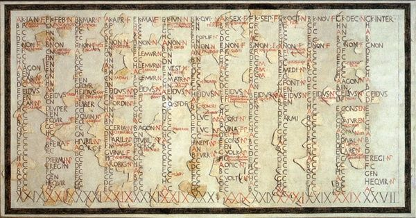

Why Do We Have Calendars
Almost every part of modern life depends on calendars. We use them to schedule school, plan holidays, organize work, celebrate birthdays, track historical events, and even launch spacecraft. Calendars are so common that most people rarely stop to wonder why they exist at all.
Yet for most of human history, calendars did not exist in the form we know today. Early humans had no printed dates, digital reminders, or wall calendars. Instead, they relied on nature itself. The movement of the Sun, the changing phases of the Moon, and the cycle of the seasons served as humanity's first clocks and calendars.
Over thousands of years, civilizations realized that accurately tracking time could improve farming, trade, religion, navigation, and government. This need eventually led to the creation of calendars, one of the most important inventions in human history.
Life Before Calendars
Tens of thousands of years ago, humans lived as hunter-gatherers. Survival depended heavily on understanding nature. People needed to know when animals migrated, when plants grew, when rivers flooded, and when weather patterns changed.
Without written records, these patterns were passed down through observation and storytelling. Communities learned to recognize seasonal changes by watching the sky and their environment.
The rising and setting of the Sun provided a daily rhythm, while the changing appearance of the Moon created a longer cycle that could be observed easily without instruments.
Long before calendars were written on paper, they existed in people's memories and observations of nature.
The Moon: Humanity's First Calendar
One of the easiest natural cycles to observe is the Moon. It changes shape in a predictable pattern known as the lunar cycle.
From new moon to full moon and back again takes about 29.5 days. Ancient people quickly noticed this repeating pattern and began using it to measure longer periods of time than a single day.
Some of the earliest known calendars were lunar calendars based on the Moon's phases. Archaeologists have even discovered ancient bones marked with notches that may have been used to count lunar cycles tens of thousands of years ago.
These early systems allowed communities to track time more accurately than ever before.
Why Farmers Needed Calendars
The invention of agriculture changed everything.
Once humans began farming around 12,000 years ago, knowing the correct time of year became extremely important. Plant crops too early and frost could destroy them. Plant too late and harvests might fail before winter.
Successful farming required accurate knowledge of seasonal changes. Communities needed reliable ways to predict when spring, summer, autumn, and winter would arrive.
This need pushed civilizations toward creating more advanced calendar systems based on the Sun and the changing seasons.

The First Great Civilizations and Timekeeping
Ancient civilizations such as the Egyptians, Babylonians, Chinese, and Maya all developed sophisticated methods for measuring time.
The Egyptians were among the first to create a solar calendar. By carefully observing the stars and the annual flooding of the Nile River, they developed a year consisting of 365 days.
This was remarkably accurate and represented a major breakthrough in humanity's understanding of time.
Other civilizations developed their own systems, often combining lunar and solar observations to create calendars suited to their needs.
Why a Year Exists
A year is not an arbitrary invention. It is based on Earth's journey around the Sun.
Our planet takes approximately 365.2422 days to complete one orbit. This motion creates the cycle of seasons that repeats year after year.
Ancient astronomers gradually realized that this repeating cycle could serve as a reliable foundation for organizing time.
By aligning calendars with Earth's orbit, societies could predict seasonal events far more accurately than before.
The Roman Calendar and the Birth of Modern Dates
One of the most influential calendars in history was developed by the Romans. Early Roman calendars were complicated and sometimes inaccurate. Political leaders could even alter dates for their own advantage, creating confusion about the true length of a year.
In 46 BCE, Julius Caesar introduced a major reform known as the Julian Calendar. Working with astronomers, he established a year of 365 days with an extra leap day added every four years.
This system dramatically improved accuracy and became widely used throughout Europe for centuries.
Many of the names we use for months today, including July and August, originate from the Roman calendar.
The Problem with the Julian Calendar
Although the Julian Calendar was a huge improvement, it was not perfectly accurate. The actual solar year is slightly shorter than 365.25 days.
That tiny difference seemed insignificant, but over centuries it caused the calendar to drift away from the seasons.
By the sixteenth century, important seasonal events were occurring on dates that no longer matched astronomical observations.
This created problems for agriculture, navigation, and religious celebrations that depended on accurate dates.
The Gregorian Calendar
To solve this problem, Pope Gregory XIII introduced a revised calendar in 1582. This became known as the Gregorian Calendar.
The new system modified leap year rules to better match Earth's actual orbit around the Sun. Most countries eventually adopted this calendar, and it remains the world's most widely used calendar today.
The Gregorian Calendar is accurate enough that it loses only about one day every few thousand years.
Why We Have Leap Years
If Earth took exactly 365 days to orbit the Sun, calendars would be simple. However, the orbit actually takes approximately 365.2422 days.
That extra fraction accumulates every year. Without correction, the seasons would slowly shift across the calendar.
After many centuries, summer could eventually occur in what we call December, while winter might occur in June.
Leap years solve this problem by occasionally adding an extra day, keeping calendars aligned with Earth's orbit and the seasons.
Different Calendars Around the World
Although the Gregorian Calendar is the international standard, it is not the only calendar used today.
Various cultures and religions maintain their own calendar systems for traditional and ceremonial purposes.
Examples include the Islamic calendar, which is primarily lunar, the Hebrew calendar, which combines lunar and solar elements, and several traditional Asian calendars that remain important for festivals and cultural events.
These calendars reflect humanity's diverse approaches to measuring time.
Calendars in the Modern World
Today, calendars are far more than tools for tracking seasons.
Governments use them to organize laws and elections. Businesses use them to plan projects and finances. Schools schedule academic years, and scientists coordinate research across continents.
Modern transportation systems, communication networks, and computer systems all depend on accurate date and timekeeping.
Without standardized calendars, global coordination would become extraordinarily difficult.
The Future of Calendars
As humanity expands into space, calendars may need to evolve once again. A future colony on Mars, for example, would experience days and years of different lengths than those on Earth.
Scientists have already proposed potential Martian calendars to help future settlers organize life on another planet.
Just as ancient civilizations adapted calendars to their environments, future generations may create entirely new systems for worlds beyond Earth.
A Tool That Organized Civilization
Calendars may seem ordinary today, but they represent thousands of years of observation, science, and human ingenuity.
What began as people watching the Moon and the changing seasons evolved into one of civilization's most important tools.
Calendars help humanity coordinate activities, preserve history, predict the future, and understand our place in the larger rhythms of nature.
Every date written on a calendar is part of a system developed over millennia—a system that connects modern life to some of humanity's earliest observations of the sky.